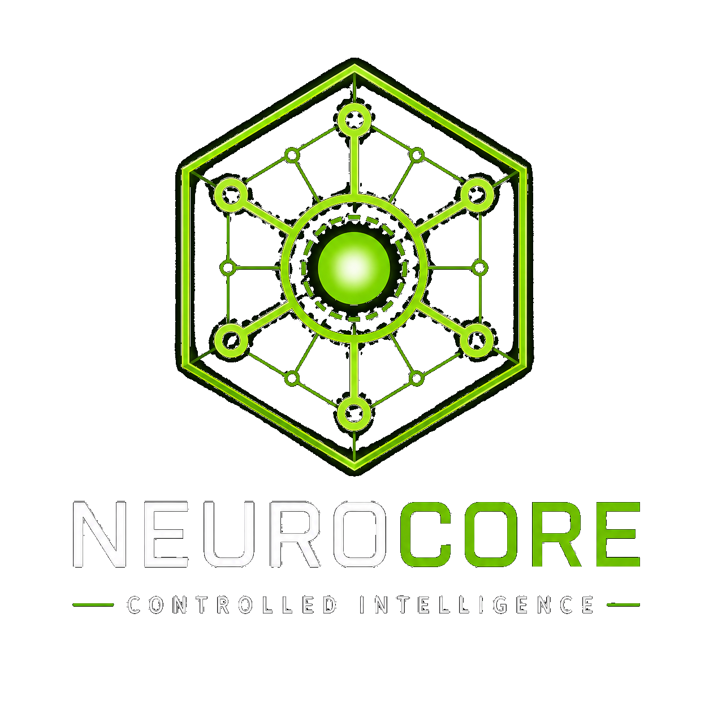

01
Interface
CLI / ACLI
The user asks a question or runs a diagnostic command such as
acli system.

NeuroCore Platform • Phase 6
NeuroCore is a local-first cognitive runtime platform built around a persistent daemon, a governed request path, controlled tools, structured system evidence, and local tracing. The current implementation provides that runtime foundation while deeper continuity, memory, privacy enforcement, and policy capabilities remain under development.

Most AI tools reset every session. They forget your infrastructure, force you to send sensitive data to the cloud, and have no built-in rules about what they are allowed to do. For businesses that need privacy, accuracy, and safety, this creates real risk.
NeuroCore was built to solve exactly that problem.
NeuroCore is not a chatbot wrapper or an uncontrolled agent. It is a persistent, local-first cognitive runtime platform designed to run as a daemon inside your own systems.
Its long-term direction goes beyond one diagnostic product. NeuroCore is being designed to develop governed awareness of the systems it runs on, the users it supports, and eventually the environment around it through approved interfaces such as voice, cameras, sensors, and connected devices.
It is being built around three things AI normally lacks:
AI can reason. NeuroCore governs how that reasoning reaches real systems.
Continuity is one of NeuroCore’s core design goals, but the long-term memory system is not meant to be hidden model memory or a chatbot remembering whatever happened in a previous conversation.
The current direction is NeuroCore Continuum: a planned continuity layer for governed context, source authority, memory discipline, reload behavior, and long-running project understanding. Continuum is in Stage 0 architecture planning, not runtime implementation yet.
The current foundation already points in that direction: source-controlled documentation, build logs, repo maps, resume prompts, context-loading rules, and local retrieval all help preserve project state without relying on fragile chat history.
As the architecture matures, Continuum is intended to organize that material through a source registry, context index, task-specific context load profiles, conflict handling, decision records, correction records, context status reports, and working-understanding reports.
The goal is not for the model to decide what is true. The goal is for NeuroCore to assemble explicit, inspectable, source-grounded context so the model can reason over the right evidence, understand what is current, identify what is stale, and show what sources support the answer.
In plain English: NeuroCore is being designed so future AI work can resume with durable project understanding instead of starting over, guessing from chat history, or treating old summaries as truth.
Architecture: Control plane first
The diagram below shows how NeuroCore connects AI intelligence to real Linux systems without letting the model directly control the machine. The runtime gathers structured evidence first, Argus turns that evidence into diagnostics, and the model helps explain the result in a way a human can act on.
Interface
The user asks a question or runs a diagnostic command such as
acli system.
Runtime entry
Authority layer
Controlled execution
Diagnostic intelligence
System telemetry
OS boundary
Structured diagnostic result
AI intelligence layer
The model is not minimized here. It is the reasoning and explanation layer that makes the system useful to humans. NeuroCore gives it structured, local, evidence-backed context instead of asking it to guess from raw noise.
Model explanation
User-facing output
Current service diagnostics
NeuroCore and Argus now include a bounded read-only service-diagnostics layer for inspecting individual systemd services and failed-service state. The implemented path preserves structured evidence and raw command output while keeping diagnosis separate from system modification.
Current service diagnostics include direct single-service inspection, failed-service
detection, and unit-file evidence through systemctl cat.
Implemented service-diagnostics slice
Implemented system tools
Implemented Argus tools
Future model role
Future continuity layer
NeuroCore Continuum is planned as the source-authority and context-continuity layer above the runtime: source registry, context index, load profiles, conflict handling, decision and correction ledgers, and context status reports. It is Stage 0 architecture planning today, not runtime implementation yet.
The model does not freely touch the machine. Requests pass through a governed runtime path before any system-facing tool is allowed to run.
Argus turns real Linux signals into structured findings, severity, recommendations, and evidence before the model explains the result.
The intelligence is local-first, evidence-backed, traceable, and governed before it reaches real infrastructure.
AI intelligence plus runtime control: that is the NeuroCore difference.
NeuroCore is being built toward durable operational intelligence for real systems. The current implementation already provides:
Deeper continuity, broader privacy enforcement, and the full future policy architecture remain separate development work.
For teams running real infrastructure, NeuroCore provides:
This level of control is meant to reduce the risk of using AI around real infrastructure by keeping system awareness local, observable, and governed.
Argus ACLI is the first real-world product being built on top of NeuroCore. It delivers read-only Linux system intelligence: structured diagnostics, severity classification, evidence-backed findings, and raw evidence visibility. Its top-level requests use NeuroCore’s governed runtime and tool path, and the current diagnostic implementation has progressed through direct service inspection, failed-service detection, and controlled Argus Lab validation.
Argus Lab is the active early real-Linux troubleshooting, training, and validation environment for Argus. It uses controlled failures, resettable scenarios, and evidence-based diagnostic validation to test Argus tools and structured evidence flow against known real Linux problems. Broader model-guided troubleshooting remains future work.
The core runtime and control-plane path are built and working; deeper memory and continuity features remain in active development. Argus ACLI is the first product being actively refined on top of NeuroCore.
NeuroCore — the governed runtime platform, with the core runtime and control-plane path built and working
Argus ACLI — first product built on NeuroCore, currently in active development
Argus Lab — active early validation environment for controlled Linux troubleshooting
All three share the same principles: local-first operation, governed authority, evidence-backed system interaction, and continuity as an explicit design goal.